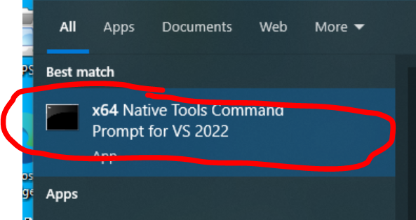

非官方中文译文 · 术语保留英文；代码、account、option、币种原样。 原文：https://beancount.github.io/docs/installing_beancount_v3/
安装 Beancount（C++ 版本）
Martin Blais - 2020 年 7 月
http://furius.ca/beancount/doc/v3-install
以下是在您的计算机上下载并运行 Beancount v3（开发中）的说明。对于 v2，请参阅此文档：Beancount - 安装 (v2)
| 本文档介绍的是 Beancount v3，这是一个实验性的开发中版本（截至 2020 年 7 月）；构建稳定版本（Beancount v2）的说明可在另一份文档中找到。 |
设置 Python
运行程序仍然需要 Python 依赖项。
pip install –r requirements/dev.txt
使用 Bazel 构建
警告：这是一个实验性开发分支。不要期望一切都已完美打磨。
Bazel 依赖项
Beancount v3 使用 Bazel 构建系统，这在很大程度上将您与计算机上的本地安装和依赖项隔离开来。
需要安装的依赖项如下：
-
Bazel 本身。 请遵循 https://bazel.build/ 上的说明。
-
C++ 编译器。 g++ 或 clang 均可。我使用的是 clang-11。
-
Python 运行时（版本 3.8 或更高）。请从您的发行版安装。
Bazel 会自行下载并编译其所需的所有库（甚至包括代码生成器，例如 Bison），并按照构建中指定的精确版本进行构建，因此您无需为此担心。
构建与测试
只需运行以下命令：
bazel build //bin:all
目前还没有安装脚本，您必须从源代码运行。您可以使用以下命令运行单个程序（例如 bean-check）：
bazel run //bin:bean_check -- /path/to/ledger.beancount
或者，如果您不介意自动重新构建修改后的代码，可以这样运行：
./bazel-bin/bin/bean_check /path/to/ledger.beancount
开发
您可以像这样运行所有单元测试：
bazel test //...
由于 Bazel 对所有依赖项都有详细的记录，在修改代码后重新运行此命令只会重新测试受影响的 targets；这使得带有测试的迭代开发变得更加有趣。
另一个优势是，由于构建所依赖的所有库都是下载并构建的，虽然这在首次构建时可能较慢，但它允许我们使用非常新发布的依赖代码版本。
Targets 在其目录本地的 BUILD 文件中定义。所有构建规则都可以在 //third_party 下找到。
数据摄取（Ingestion）
数据摄取代码涉及导入位于仓库外部的代码。Bazel 二进制文件是自包含的，如果未声明为依赖项，导入模块将会失败，因此运行 //bin:bean_extract target 可能无法正常工作。
这目前还不起作用（除非将您的导入配置构建为一个显式链接到 Beancount 的 py_binary() target）。通过定义一个合适的 WORKSPACE 文件来从中获取规则，可以在不编写太多 Bazel 代码的情况下实现这一点。我还没有提供这方面的示例（待定）。
作为变通方法，您可以设置 PYTHONPATH 以从源代码位置导入，并预先创建一个指向解析器 .so 文件的符号链接。您可以像这样操作：
make bazel-link
待定（TBD）
还有一些构建集成任务需要完成：
-
尚不支持 pytype。
-
pylint 也未集成到构建中。
使用 meson 进行开发安装
注意：本节基于以下讨论进行了更新：https://groups.google.com/g/beancount/c/7ppbyz_5B5w
Beancount v3 的 Bazel 构建会编译一些实验性的 C++ 代码，截至撰写本文时（2024 年 3 月 9 日），这些代码除了用于技术演示外，尚未用于其他任何用途。在“生产”环境中，v3 使用 meson-python 来构建扩展模块，并将其打包成 Python wheel。这就是 pip 在安装过程中所使用的机制。
本节描述的是用于开发 beancount v3 python 代码的安装流程，而不是用于实验 C++ 代码。
在 Linux 上
已在 Ubuntu 上使用 python3.12 和 python3.12-dev 进行测试
相关链接
https://mesonbuild.com/meson-python/how-to-guides/editable-installs.html
git clone https://github.com/beancount/beancount.git
创建并激活虚拟环境
python3.12 -m venv beancount/venv
. beancount/venv/bin/activate
cd beancount
安装所需的软件包。
python -m pip install meson-python meson ninja
以可编辑模式安装 beancount，且不进行构建隔离
python -m pip install --no-build-isolation --editable .
注意： 有一种 观点 认为不需要 --no-build-isolation 选项，但也有人提到，如果没有这个选项，安装将无法正常工作。此外，文档 也建议需要此选项。这可能取决于 Linux 环境的类型
安装 pytest
python -m pip install pytest
运行测试并确保一切正常：
pytest --import-mode=importlib beancount/
在 Windows 上
已在 64 位 Windows 10 Pro 上测试
先决条件
安装 Microsoft Visual Studio（已在 v 2022 上测试）
步骤
git clone https://github.com/beancount/beancount.git
cd beancount
如果运行的是 x64 位 Windows，请启动 "x64 Native Tools Command Prompt for VS 20XX"。为此，请按下并释放 Windows 键，然后输入 x64

打开此提示符
转到 beancount 安装的目录
C:\Program Files\Microsoft Visual Studio\2022\Community>cd C:\_code\t\beancount
C:\_code\t\beancount>
激活虚拟环境
C:\_code\t\beancount>venv\Scripts\Activate
(venv) C:\_code\t\beancount>
安装所需的软件包
(venv) C:\_code\t\beancount>py -m pip install meson-python meson ninja
以可编辑模式安装 beancount。与 Linux 不同，在 Windows 上 --no-build-isolation 一方面会抛出一些错误，另一方面似乎并不需要
(venv) C:\_code\t\beancount> py -m pip install --editable .
安装 pytest
(venv) C:\_code\t\beancount>py -m pip install pytest
运行测试
(venv) C:\_code\t\beancount>pytest --import-mode=importlib beancount
注意：Windows 上的一些测试会失败，这是由于通用的 可移植性问题
版权与许可：原文 © Martin Blais / beancount/docs contributors，MIT License。中文翻译为非官方 derivative work，仅供个人学习；详见 NOTICE.md。